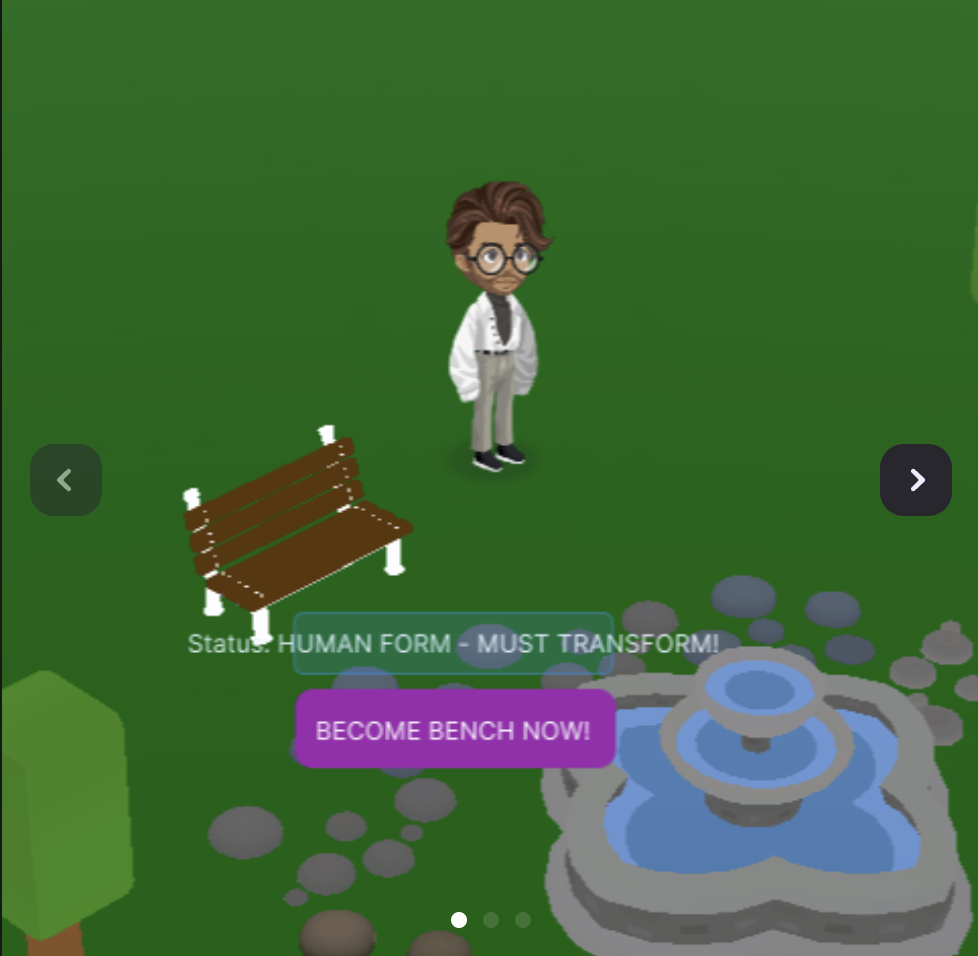

|
Jeronimo del Valle I'm a recent Computer Science graduate from UT Austin, hailing from Mexico, with a keen interest in merging technology and business. My academic path includes developing three innovative apps, a Google Chrome extension, computer vision project, and website with an API. These ventures have fine-tuned my technical skills and fueled my passion for practical digital solutions. I'm particularly passionate about machine learning, software development, and game development. After exploring data analytics and investment banking, I refocused on computer science, my true passion. Committed to deepening my expertise, I aim to grow as a creator, developer, and leader in the tech industry. |

|
ProjectsProjects with code hosted online are highlighted in yellow |
Machine LearningMy machine learning projects focus on computer vision applications and implementing core algorithms from scratch. I'm particularly interested in automation and predictive modeling. |
|
|
Optimizer Comparison Study: Neural Network Training Analysis
Jeronimo del Valle Python, PyTorch, Jupyter, 2025 project page / research paper A comprehensive, reproducible study comparing five optimizers (SGD, Momentum, Adam, AdamW, and AdaBound) on MNIST dataset across different network depths and activation functions. The research includes a complete Jupyter notebook for reproduction and a detailed PDF paper. Key findings show that adaptive optimizers outperform SGD and Momentum for deeper networks, with AdaBound + Swish achieving 98.2% accuracy on 3-layer networks. The study demonstrates the importance of optimizer selection and activation function choice in neural network training. |

|
Auto-Benchmark: Automating the Human Benchmark using Computer Vision
Jeronimo del Valle Python, 2024 project page This repository contains a collection of Python scripts designed to automate different tests available on the Human Benchmark website. These scripts leverage various Python libraries to interact with the user's screen, analyze visual data, and automate mouse and keyboard actions. |
|
|
Decision Tree Classifier: From Scratch
Jeronimo del Valle Python, 2024 project page This repository offers a streamlined Python decision tree classifier, capable of handling CSV datasets for varied predictive modeling tasks. Utilizing pandas for data management and numpy for calculations, it features an adjustable-depth decision tree algorithm and k-fold cross-validation for optimized performance evaluation. |
Software EngineeringMy software engineering projects range from mobile applications and browser extensions to web development and API design. I focus on creating practical solutions that enhance user productivity and experience. |
|
|
Texas Homes Project
Shahmir Masood, Ananth Kothuri, Gabriel Casanova, Jeronimo Del Valle Ocejo, CS 373, Spring 2024 website link / gitlab / API This website was created as a team project for CS 373 in Spring 2024. It aims to support individuals facing homelessness in Texas. Our mission is to offer an online platform that connects those in need with homeless shelters, promotes awareness for organizations aiding homeless communities, and spotlights local volunteer opportunities. Additionally, we developed an API to enhance access to resources and information, streamlining the process of finding help and engaging with community support efforts. |
|
|
Tab Time Tracker: Reordering Tabs Based on Usage
Jeronimo del Valle Chrome Web Store, 2023 product page Frustrated by the constant clutter of tabs while working on various projects, I embarked on a mission to find a solution. The result of my efforts was Tab Time Tracker, a Google Chrome extension crafted with HTML, CSS, and JavaScript. The idea was simple: create a tool that not only identified duplicate tabs but also sorted them based on usage time. |
|
|
Auto Snooze
Jeronimo del Valle, App Store, 2023 product page Auto Snooze sprang from my own desire for an alarm that could turn off by itself, essential for my lucid dreaming practices, specifically the Wake Back To Bed (WBTB) method. I couldn't find anything suitable on the App Store, so I created a solution that allows users to customize their alarm sound and duration. |
Game DevelopmentMy passion for game development spans from mobile games to immersive 3D experiences. I focus on creating engaging gameplay mechanics and memorable user experiences. |
|
|
IO Arena Shooter - Multiplayer Browser Game
Jeronimo del Valle Node.js, Socket.io, JavaScript, HTML5 Canvas, 2025 project page / play game A real-time multiplayer arena shooter game built with Node.js and Socket.io, featuring dynamic weapon systems, level progression, and competitive gameplay. Players engage in fast-paced combat with upgradable weapons and passive abilities, while competing for top positions on the live leaderboard. The game includes a sophisticated upgrade system with legendary status unlocks, real-time player statistics, and smooth client-server synchronization. Built with modern web technologies including HTML5 Canvas for rendering and Vite for optimized development workflow. |
|
|
Stomach: Horror Cooking Game
Team of 8 (Capstone Project) Unity, C#, 2025 itch.io page / trailer Stomach is a first-person horror cooking game where you play as a line cook recently hired for a cruise ship. Your job is to prepare ingredients and make dishes to deliver to customers, but each night the ship seems to twist and turn against you, with walls that sound less like creaking and more like breathing. No matter what you might see or hear... YOU. MUST. COOK. This capstone project will be released on Steam and itch.io. |
|


|
Prop Hunt Highrise - Multiplayer Game
Jeronimo del Valle Unity, Lua, 2025 project page / play game A multiplayer prop hunt game developed for Highrise Studio where players can transform into props and hide from each other. Built with Unity using Lua scripting, this project demonstrates my skills in multiplayer game development, networking, and creative gameplay mechanics. Players take on the role of either hunters or props, with props able to disguise themselves as various objects in the environment while hunters search for them. |

|
BubPop Supreme - Relaxing Game
Jeronimo del Valle App Store, 2023 product page BubPop Supreme was my first large-scale solo project, a relaxing bubble popping game that I launched on the App Store in 2023. I focused on making every pop feel satisfying and built a visually appealing world around it. The game is packed with cool power-ups and serene backdrops, making it the perfect go-to for anyone looking to relax. It also incorporates advertisements and in-app purchases. Check it out! Its free to download. |
|
Based on Jon Barron's website |